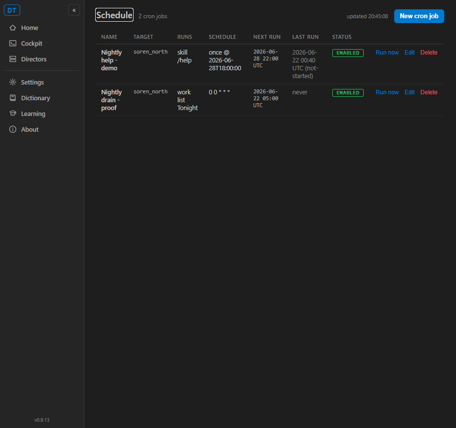
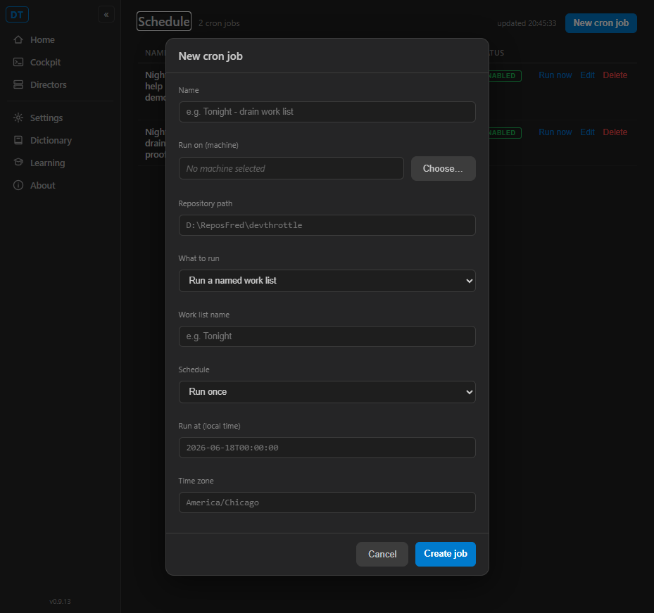
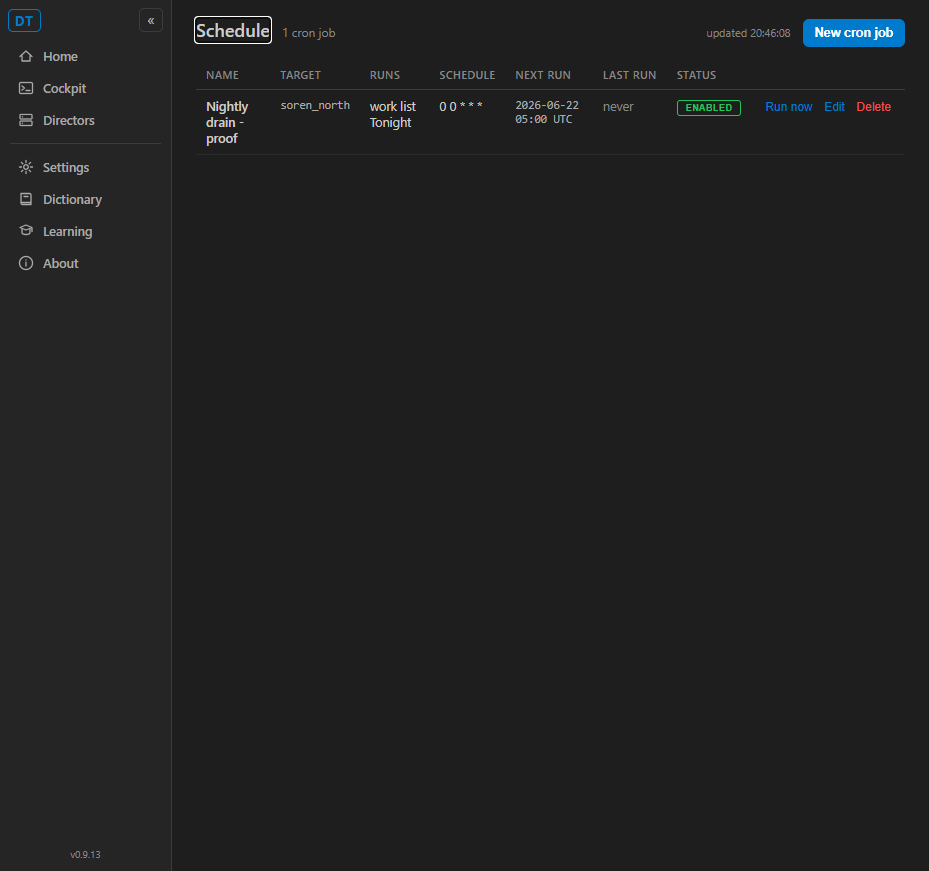

cc-cron CLI under tools/cc-cron/ (Python/typer/rich,
same structure as cc-settings): list, get <id>,
runs <id>, create (one-off --at/--tz or
recurring --cron/--tz, with --machine, --repo,
and --seed OR --worklist), run <id> (run-now),
enable/disable <id>, delete <id>, and an
endpoint diagnostic. A thin REST consumer only - it owns no job state and runs no
scheduler (Scope OUT honored: no engine/store/CronJobDto/CronRunRecord
change).gateway.url (via cc_shared.config, the same
value the desktop and Cockpit use); falls back to the documented loopback default only when no
gateway URL is configured, mirroring C# CockpitUrlResolver.LocalhostDefault. A global
--gateway override is available. The Gateway's 400 validation message is echoed
verbatim; an unreachable Gateway yields a clear error, never a stack trace.tools/registry.json ("ship": true) with a
pyproject.toml, cc-cron.spec, build.ps1, and unit tests
(tests/test_gateway.py, 13 tests passing).style="display:none" in NavMenu.razor, the same v1-alpha posture as the
other hidden items); the /schedule route stays fully functional and is reached by the
documented, discoverable opt-in of navigating to it directly. NOT graduated to default-on.CC_TOOLS.md entry for cc-cron (with the full flag
table and the endpoint-discovery / error behavior) plus a one-paragraph "Scheduling" section
pointing humans at the Schedule page (and how to opt in) and agents at cc-cron.| # | Criterion | Expected | Actual | Proof |
|---|---|---|---|---|
| 1 | cc-cron create --name ... --at ... --tz America/New_York --machine ... --repo ... --seed "/help" -> 201 + id + nextRunUtc |
Gateway returns 201; CLI prints new id and nextRunUtc; GET echoes the job. | Created cj_5ae17c, nextRunUtc 2026-06-28T22:00:00Z (18:00 EDT -> 22:00 UTC, DST-correct), seed /help stored correctly; list echoes it. |
PASS |
| 2 | list / get / runs / run / delete (and enable/disable, recurring create) map to REST with readable output | Each maps to the matching GET/POST/PUT/DELETE route; readable tables/fields. | All exercised against the live Gateway; rich tables + field views; enable/disable via read-modify-write PUT (same path as the Cockpit toggle). | PASS |
| 3 | Endpoint discovery with no hard-coded port; clear not-reachable error | Base URL from gateway.url, loopback default otherwise; friendly error when down. |
endpoint resolved http://127.0.0.1:17900 purely from config; --gateway at a dead port -> "Gateway not reachable ..." with no stack trace. |
PASS |
| 4 | Invalid schedule surfaces the Gateway 400 message, not a stack trace | Echo the Gateway's validation text. | Bad cron -> invalid cron expression: not-a-cron; bad time -> runAt is not a parseable timestamp: not-a-time; bad tz -> unknown timeZoneId: Not/AZone. Single "Error:" line, exit 1, no traceback. |
PASS |
| 5 | Schedule page reachable in a default v1 install via a documented, discoverable opt-in; shows jobs/next-run/history; can create/run/delete | Nav item hidden by default; /schedule reachable directly and fully functional. |
Screenshot: nav rail has NO Schedule item; /schedule shows both jobs with next-run, run history, ENABLED status, Run now / Edit / Delete, and New cron job. Create modal opens; UI Delete removed a job (2 -> 1). |
PASS |
| 6 | CC_TOOLS.md documents cc-cron; build clean |
Doc entry present; full solution builds with 0 errors. | CC_TOOLS.md has the cc-cron entry + Scheduling section. dotnet build cc-director.sln -> Build succeeded, 0 Warning(s), 0 Error(s). 13 cc-cron unit tests pass. |
PASS |
Error: <message>
line to stderr and exits non-zero. There is no Python stack trace. (PowerShell additionally decorates a
native program's stderr with its own "python.exe : ..." block; that is PowerShell, not cc-cron.)



No architecture or security drift. cc-cron is a pure REST consumer of the already-shipped Gateway cron
surface; no cron engine/store/CronJobDto/CronRunRecord contract changed, no new
security surface was added (it reuses the existing gateway.token Bearer model and the
same-machine loopback path). The Cockpit change is a single nav-visibility toggle. No
docs/cencon/ manifest or security-profile update is required.
I believe this is finished. All six acceptance criteria are met and proven against a live, isolated Gateway, the full solution builds clean (0 warnings, 0 errors), and the cc-cron unit tests pass.